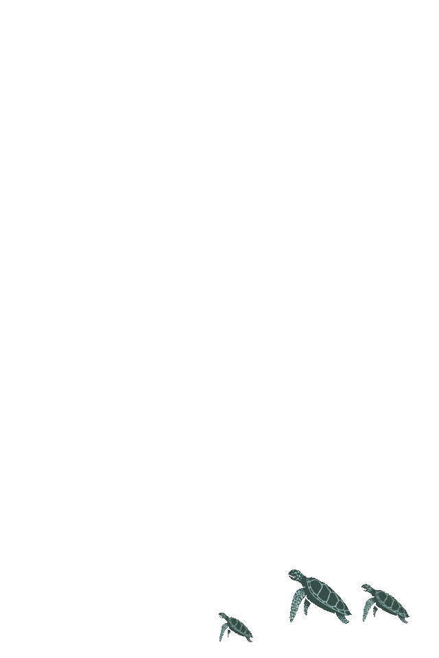
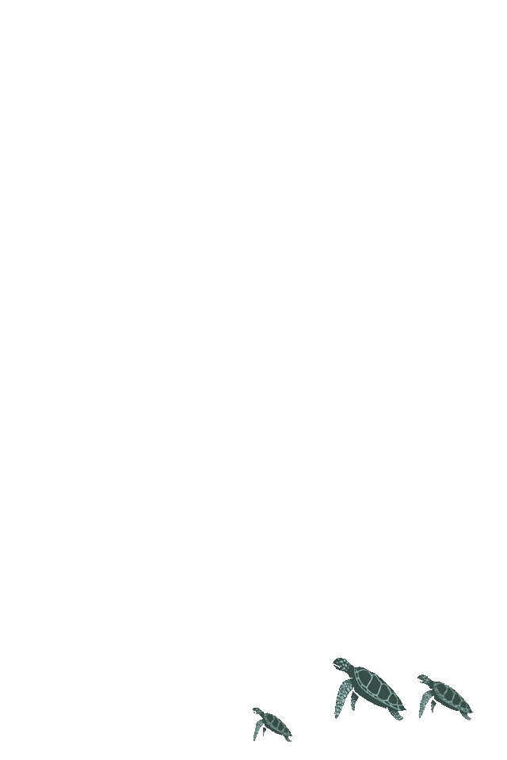

Les Insurgés
des déchets


Les Insurgés
des déchets


 



Toute l'actualité concernant nos actions de ramassage des déchets et de sensibilisation
Campagne de recrutement de bénévoles


L'association Les Insurgés des déchets est née !
Le 24 juin 2021 a eu lieu l’Assemblée générale (AG) constitutive de l’Association Les Insurgés des déchets. Les membres fondateurs ont validé le projet d’ordre du jour suivant : Examen et adoption du projet de statuts / Mise en place du Bureau de l’Association. C'est officiel ! Le 6 juillet, l’Association est officiellement née à la suite de l'annonce de sa publication au Journal officiel des associations et fondations d’entreprise (JOAFE). C'est la concrétisation des efforts menés depuis le 1er mars dernier.
Vous pouvez dès à présent adhérer et nous rejoindre ou bien faire un don libre ! Pour en savoir plus, c'est ici

14 juillet : Battle Écocitoyenne à La Rochelle
En collaboration avec Clément Chapel de l'association Ploggathon et Veronika Tornade notre handi-ploggeuse, nous avons organisé une action sensibilisation à La Rochelle à l'initiative de notre ambassadrice : Mimi alias carnet de Mimi ! Comme vous êtes censés le savoir, le 14 juillet à La Rochelle c'était les Francofolies, ce qui signifie beaucoup de pollution ! Alors on a eu envie de faire bouger les choses et de sensibiliser le maximum de personnes ! Bonne humeur, rires et ondes positives étaient au rdv.
Pour en savoir plus, c'est ici
18 juillet : Participation à La journée du littoral et de la mer à Bourcefranc-Le Chapus
Le 18 juillet à Bourcefranc-Le Chapus, nous avons eu l'honneur de tenir un stand au port du Chapus de 10h30 à 18h30 en tant qu'ardents défenseurs des océans, des cours d'eau, des rivières, et des campagnes. L'objectif était de sensibiliser un maximum de personnes et d'exposer également nos créations dans un esprit DIY.
Pour en savoir plus, c'est ici
Partenariat Ville de Marennes
22 juillet 2021 - Pochage des bacs à marée
À la suite de la réunion du 30 juin 2021 avec la ville de Marennes et des avancées sur les projets actuels, nos deux bacs à marée prévus pour Marennes plage viennent d'être customisés par nos soins.
Un grand merci aux √©quipes des services techniques de la ville qui font un travail admirable au quotidien ! Prochaine √©tape dans quelques jours : l'inauguration ! üçæüçæ
Pour en savoir plus, c'est ici

3 septembre : Participation au Forum des associations à Bourcefranc-Le Chapus
Le 3 septembre à Bourcefranc-Le Chapus, nous tiendrons un stand dans la salle Le Sémaphore de 17h00 à 19h00 pour le traditionnel forum des associations. C'est avec un immense plaisir que nous vous accueillerons afin de vous faire découvrir tout ce que l'on vous prépare pour la rentrée 2021/2022. En espérant vous voir nombreux !
4 septembre : Participation au Forum des associations à Marennes
Le 4 septembre à Marennes, nous tiendrons un stand au Centre d'Animation et de Loisirs à partir de 10h00 (⚠️ l'horaire reste toutefois à confirmer) pour le traditionnel forum des associations. Au programme : toutes les réponses à vos questions sur les activités de notre association et sur le planning de nos actions de ramassage.